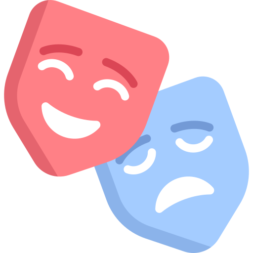
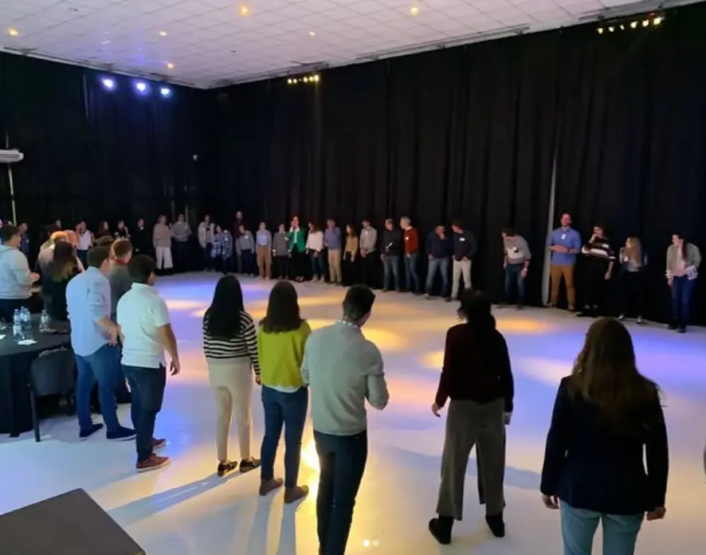
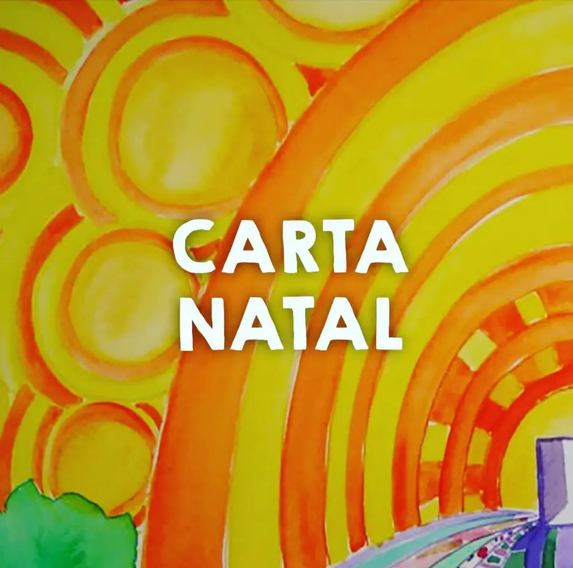
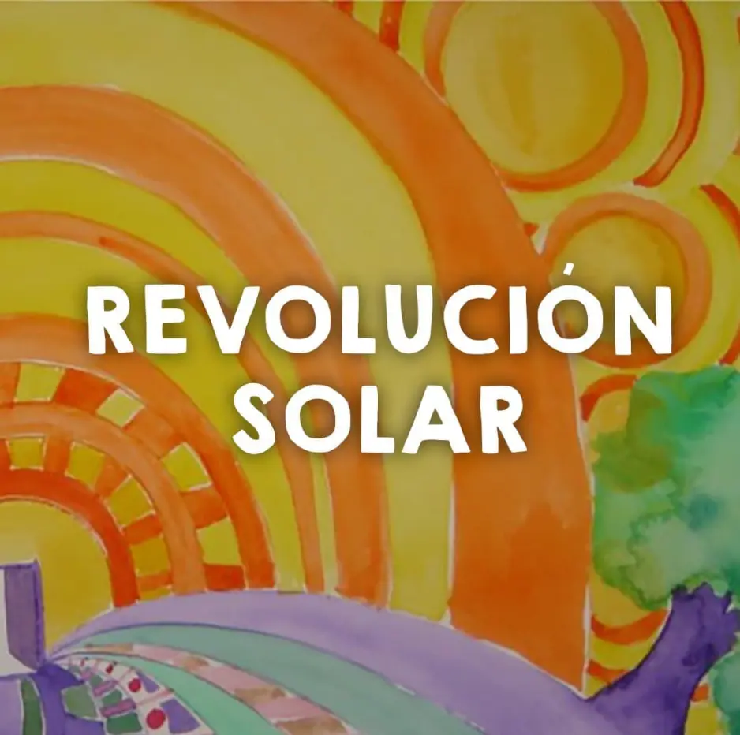
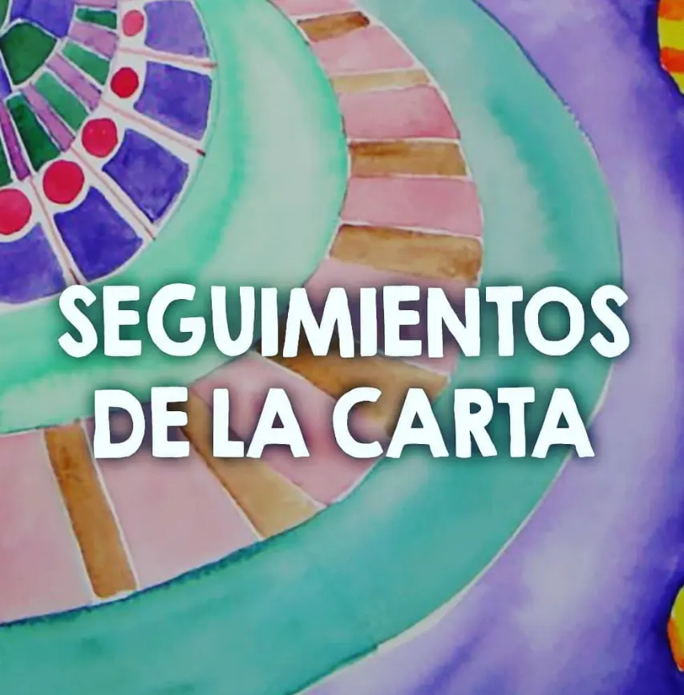
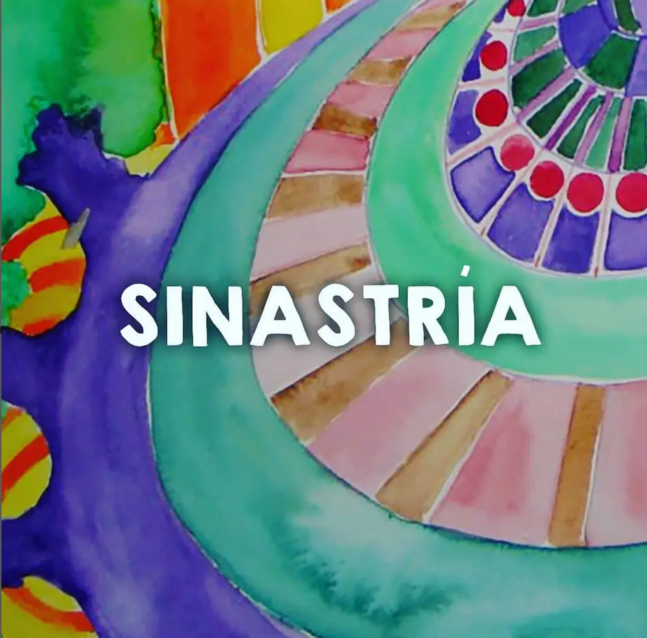
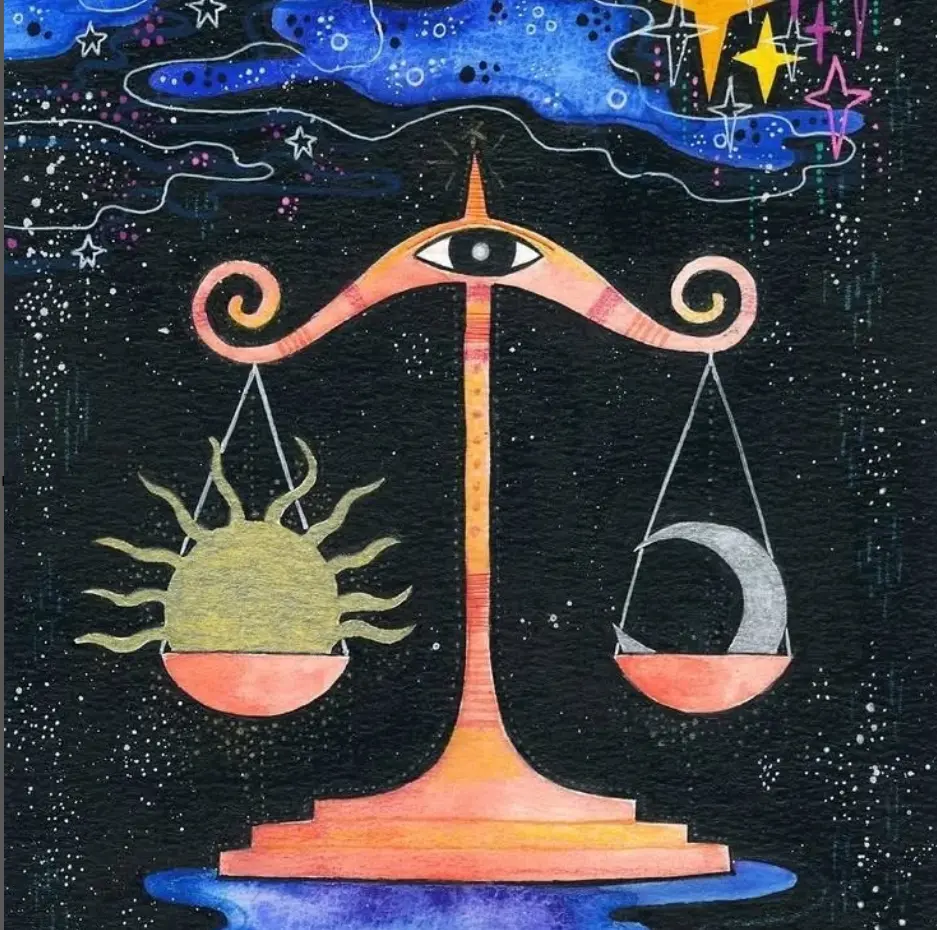
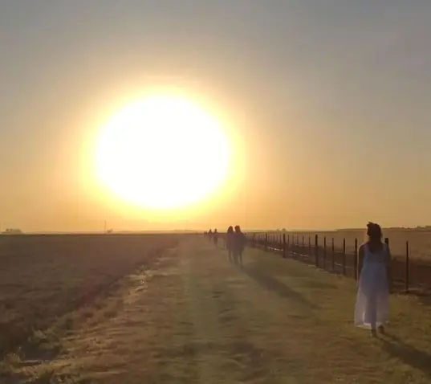

🎭 NOVEDADES


SOBRE MI
SILVINA ALFIE
Estudié teatro en mi país con diversos maestros, Lorenzo Quinteros , Ricardo Bartis , Pino Solanas, Rubén Schumacher, entre otros. Además, me formé con maestros en Brasil, India e Italia. Paralelamente mis estudios se enriquecieron con expresión corporal, danza, contact, trabajos con la voz, canto, clown, dramaturgia y puesta en escena. Siempre busqué herramientas para transformar a través de la creación y la expresión. En la India inicié mi práctica en yoga y, en Malasia, en artes marciales. Entrené Pakua, Tai chi, Chi Kung, bioenergía y visualizaciones guiadas. Practico yoga y meditación; soy reikista. Estudié PNL, constelaciones familiares y psicodrama.
Desde hace más de 15 años soy astróloga. Me recibí en “Casa XI”, luego hice postgrados y participé en grupos de estudios en "Casa XI" y en "Red Luna Venus". Además de atender en consultorio privado, desarrollo un método tejiendo el encuentro entre la astrología y el teatro.
Como docente, creé mi escuela de teatro desde hace mas de 20 años para adultos, niños y adolescentes. Desde entonces y cada año vamos dando vida a distintos grupos que van desarrollando su aprendizaje y experiencia desde distintos contenidos.
He participado en numerosos trabajos junto a directores reconocidos y también realizando mis propios espectáculos teatrales, obras, infantiles, varieté, teatro callejero, etc. Realicé giras por el interior de Argentina y participé en giras internacionales en Perú, España e Italia. Además, trabajo junto al “Teatro dei Naviganti” de Messina, Italia, tanto en Argentina como en Italia.
Soy Directora General del FOC, Festival de Obras Cortas, que ya lleva 9 temporadas.
Desde hace 18 años, realizo laboratorios y retiros intensivos, combinando y experimentando el encuentro de la naturaleza con el teatro y la astrología, en San Marcos Sierra (Córdoba), Mar de las Pampas, Tigre, San Pedro, Mar del Plata, entre otros lugares.
Desde hace más de 15 años, trabajo realizando capacitación empresarial utilizando técnicas teatrales para empresas, organizaciones y grupos.
TEATRO
ESCUELA DE TEATRO
Desde hace 35 años estoy en contacto con el Teatro. Como docente, creé mi escuela hace más de 20 años para adultos, niños y adolescentes. Utilizo la investigación y la experimentación como modalidad de trabajo, abocada a la realización de una experiencia permanente.
Fui encontrando mi propio método de entrenamiento y trabajo a partir de la acumulación de conocimientos y práctica desde los diversos maestros y maestras y lo que me fueron transmitiendo. Junto al enriquecimiento y apertura hacia la expresión corporal, danza, contact, trabajos con la voz, canto, clown, dramaturgia y puesta en escena. Siempre en la búsqueda de herramientas para transformar a través de la creación y la expresión.
Y desde mi camino de conexión espiritual desde la astrología, la práctica en yoga, artes marciales, Pakua, Tai chi, Chi Kung, bioenergía, visualizaciones guiadas, meditación, reiki, PNL(programación neurolingüística), constelaciones familiares y psicodrama. Mi principal inquietud es investigar acerca de los cuerpos vivos del actor: El cuerpo físico (representado por el elemento tierra), cuerpo mental (aire), cuerpo emocional (agua) y cuerpo energético (fuego), como se introducen en el espacio escénico provocando un sentido: la dramaturgia del cuerpo del actor.
A lo largo de esta trayectoria la pedagogía encuentra su cauce, desde la relación entre el teatro, la astrología, la danza, las tradiciones orientales, los viajes expansivos, los encuentros y el valor de crear. Hay un mundo que vive en nuestro interior y el teatro ayuda a que este mundo se mueva.

TALLERES ANUALES
MARZO-DICIEMBRE 2026
Para jóvenes y adultos desde 20 años en adelante.
-Grupos diferentes en diversos días y horarios.
-Propuestas para personas sin experiencia, con experiencia en otros
lenguajes de actuación y avanzados.
-Entrevista: armamos un encuentro para conocerte y sugerirte grupo.
PARA MAS INFORMACIÓN: Entrevistas e inscripciones a silalfie@yahoo.com.ar

TALLERES ANUALES
ABRIL-DICIEMBRE 2026
Para Chicos de 11 a 15 años.
-Un espacio de juego e improvisación para chicos de 11 a 15 años,
donde explorarán el movimiento corporal y la expresión verbal.
-A través de ejercicios teatrales y juegos escénicos, potenciarán la
imaginación, expresarán emociones, ganarán confianza y vivirán el
encuentro con otros desde un vínculo creativo.
-Se realiza una entrevista previa para conocer al chico/a y a su
familia.
PARA MAS INFORMACIÓN: Entrevistas e inscripciones a silalfie@yahoo.com.ar
TALLERES ESPECIALES O INTENSIVOS
-Durante el año realizamos talleres especiales de un día o de
algunos días, donde se trabaja sobre alguna temática en particular,
relacionados al teatro, a la astrología, meditaciones, rituales,
etc.
-También ofrecemos estos mismos encuentros en la naturaleza.
PARA MAS INFORMACIÓN: Entrevistas e inscripciones a silalfie@yahoo.com.ar
MUESTRA FUNCIONES
-En algunos meses del año y durante el mes de noviembre y diciembre
tenemos una temporada de funciones y muestras sobre el trabajo del
año, donde los alumnos/as experimentan el encuentro con los
espectadores y el ritual teatral se completa.
-Improvisaciones, creaciones colectivas, escenas teatrales,
monólogos, obras cortas, obras largas, entre otras.
PARA MAS INFORMACIÓN: Entrevistas e inscripciones a silalfie@yahoo.com.ar
FOC - Festival de Obras Cortas
-Obras de teatro de corta duración que se arman a partir del
encuentro y el trabajo en equipo para producir.
-Es un cruce en el que actores, dramaturgos y directores que forman
parte de la red artística del estudio, realizan la puesta en escena.
Surge a partir de la necesidad de que los integrantes tengan un
espacio para, crear, hacer, materializar, concretar y mostrar su
arte.
-La temporada de funciones se realiza en el Teatro La Sodería, en
sus cuatro salas pequeñas. El Foc realizará en el 2025 su 9º
temporada.
PARA MAS INFORMACIÓN: Entrevistas e inscripciones a silalfie@yahoo.com.ar


.webp)
EQUIPO DOCENTE

Silvina Alfie

Cecilia Verly

Noberto Pinto

Tamara Rinaldi

Maylen Adorni

German Ríos

Adriana Marchi
EMPRESAS
El teatro como técnica en la capacitación en empresas, organizaciones y grupos
El teatro como un medio de experimentación y transformación social, se concibe como una herramienta de mejora para la vida en sociedad, donde todos participan como actores en la interpretación y creación de la realidad. A través de la experimentación teatral, se busca transformar y modificar la sociedad, no solo interpretarla. La experiencia teatral involucra tanto al individuo como al grupo, promoviendo la reflexión, el trabajo en equipo y la expresión creativa. Se utilizan juegos teatrales y técnicas de improvisación para explorar temas sociales, resolver conflictos y promover el cambio. El teatro se convierte en un espejo de la comunidad, permitiendo analizar y buscar soluciones a los problemas sociales. La intervención teatral busca reconstruir el sentido de la experiencia individual y colectiva, promoviendo nuevas perspectivas y formas de comprensión. El teatro se presenta como un medio poderoso para la reflexión, la expresión y la transformación.
La experiencia desde el juego teatral permite la exploración de emociones, pensamientos y acciones a través de la representación de diferentes roles y situaciones. Promueve la autoexpresión, la creatividad, el trabajo en equipo y la reflexión, favoreciendo la construcción de identidad, la comunicación efectiva y el fortalecimiento de la confianza. Además, facilita la integración social y la construcción de una comunidad basada en el respeto y la colaboración. El juego teatral es una puerta abierta a la transformación y al descubrimiento de uno mismo y del mundo que nos rodea.

Consultas e información: silalfie@yahoo.com.ar
ENTRENAMIENTOS INDIVIDUALES
Encuentros individuales donde bordamos temáticas relacionadas con el miedo a expresarse, inhibición ante público, baja autoestima, inseguridad al exponerse, dificultad para animarse a mostrarse.
Son encuentros totalmente personalizados y adaptados a las necesidades de cada persona, brindando un espacio seguro y de confianza para explorar y trabajar en la superación de los miedos y limitaciones que impiden expresarnos plenamente. Además, la combinación de distintas disciplinas como el arte, el teatro, la astrología, el coaching, las constelaciones familiares, permite abordar el proceso desde diferentes perspectivas, enriqueciendo la experiencia y ofreciendo herramientas variadas para el crecimiento personal.
A través de la carta natal se puede tener un mayor entendimiento de las fortalezas y debilidades de cada individuo, lo cual sirve como punto de partida para el trabajo de autoconocimiento y empoderamiento. Los ejercicios teatrales, meditaciones, visualizaciones, chi kung, son herramientas prácticas y efectivas para trabajar en la liberación de bloqueos emocionales, permitiendo abrirnos y conectar con nuestra esencia más profunda. Estas entrevistas ofrecen un espacio de transformación y crecimiento personal donde cada uno encuentra su propia voz y se abre a mostrarse al mundo con autenticidad y confianza.
Sugerido para cantantes, docentes, oradores, guías, líderes y toda persona que tenga que exponerse o expresar ante público.

Consultas e información: silalfie@yahoo.com.ar
ASTROLOGÍA
La astrología, a través del lenguaje sagrado, nos abre la percepción al sentido de nuestra existencia, vibrando con el viaje del alma en esta vida. Es un mapa del cielo en el momento en que nacimos. Un mapa de energías donde uno es el vehículo. La astrología nos permite entrenar la percepción, la participación de la conciencia, los hilos invisibles de la trama de la vida y descubrir el diseño cósmico que nos habita. Desde el nivel energético, pasando por el psicológico hasta llegar a la materialización de nuestra vida. Como es arriba es abajo, como es adentro es afuera.

CARTA NATAL
A partir de la foto del cielo en el momento que nacemos, reflexionamos, a través del lenguaje simbólico, cómo es tu mapa, tu adn energético.
Consultas e inscripcion: silalfie@yahoo.com.ar

REVOLUCION SOLAR
En la fecha de tu cumpleaños vemos una nueva carta que te va acompañar hasta el próximo año. Nos muestra las energías disponibles para este año.
Consultas e inscripcion: silalfie@yahoo.com.ar
TRÁNSITO, CICLOS Y PROCESOS
Miramos cómo está el cielo y sus movimientos planetarios en este momento, vinculándolo con tu carta natal y reflexionando sobre sus invitaciones.
Consultas e inscripcion: silalfie@yahoo.com.ar

SEGUIMIENTOS
Mes a mes trabajamos con tu carta desde distintos ejercicios para seguir destrabando y desplegando su potencial.
Consultas e inscripcion: silalfie@yahoo.com.ar

SINASTRIA
Conocemos las energías de tu carta natal junto con la de tu hijo/hija, pareja, amigo/a o algún familiar, entendiendo los puntos en común y las distancias entre ambas cartas, cuáles son los aprendizajes para el vínculo.
Consultas e inscripcion: silalfie@yahoo.com.ar

TALLERES
A través de tu propia carta natal, un espacio para aprender astrología desde la experiencia directa.
Consultas e inscripcion: silalfie@yahoo.com.ar

ASTROLOGIA Y TEATRO
A partir del teatro vamos poniendo en escena y entendiendo la carta natal.
Consultas e inscripcion: silalfie@yahoo.com.ar
VIAJES
Un retiro es una pausa necesaria. Nos convoca un anhelo de reconectar con nosotros mismos y una búsqueda de lo natural. Es una experiencia compartida, aprendiendo del contacto grupal y una aventura interior a la vez.
Profundizamos sobre el lenguaje que nos relaciona a los elementos que constituyen el universo, fuego, tierra, aire y agua, y nos ayudan a comprender las personalidades que encarnamos, capas que nos forman, nos construyen. Nos sumergimos al cuerpo presente, al hoy y al ahora.
Con las distintas herramientas que nos orientan: desde el teatro conectamos con el canal creativo, expresivo y de juego, desde la astrología con el vínculo viviente entre el cielo y la tierra, y en contacto con la naturaleza que nos entrega tanta sabiduría, siendo la gran maestra de la sanación.
A lo largo de estos 20 años los retiros fueron en San Marcos Sierras, Córdoba; Mar de las Pampas, Mar del Plata; Merlo, San Luis; Tigre, San Pedro, Capilla del Señor, Exaltación de la Cruz, entre otros.
En el 2025 realizaremos el viaje número 19 “Teatro y naturaleza” en San Marcos Sierras, Córdoba


2025